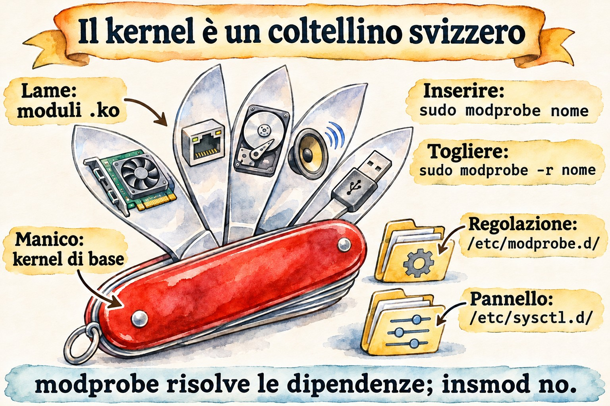
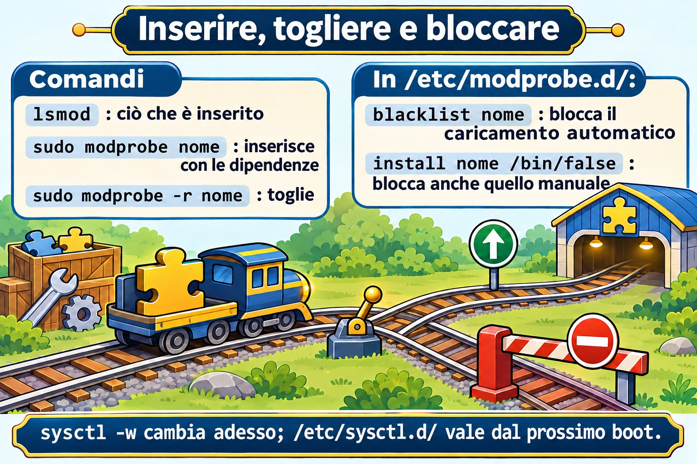

Lezione 5.2 · Moduli e parametri
Nella 5.1 hai visto che ogni componente hardware ha bisogno di un driver, e che molti driver sono moduli: pezzi di kernel caricati quando servono. In questa lezione impari a elencare, caricare, scaricare, configurare e bloccare i moduli. Impari anche a cambiare il comportamento del kernel in funzione con sysctl, e a far sopravvivere la modifica al reboot.
Il cuore di questa lezione:
lsmod,modinfo,modprobeemodprobe -r; i file in/etc/modprobe.d/(opzioni e blacklist) e in/etc/modules-load.d/(caricare al boot);sysctlesysctl -w; e i file in/etc/sysctl.d/applicati consysctl --system. Il resto è approfondimento.
| Scheda | |
|---|---|
| Modulo | M5 · Hardware, kernel e virtualizzazione, lezione 2 di 3 |
| Quando | Settimana 9 |
| Settimana | 9 |
| Durata | 2 h – 2 h 30 |
| VM | rocky-lab (201) e debian-lab (202) |
| Prima | Snapshot m5a2-inicio su entrambe |
1 Riscaldamento
Rispondi senza cercare. Le risposte sono nelle Soluzioni.
- Per cambiare il driver di una scheda di rete, bisogna ricompilare il kernel?
- Un valore cambiato con
sysctl -wsopravvive al reboot? - Se metti un modulo nella blacklist, è ancora possibile caricarlo a mano?
2 Perché conta
| Situazione reale | Cosa fai con questa lezione |
|---|---|
| Il driver di una scheda blocca il server dopo un aggiornamento | Blocchi il modulo e ne usi un altro, senza ricompilare nulla |
| Il firewall deve instradare pacchetti tra due reti | Attivi net.ipv4.ip_forward in modo permanente |
Il database chiede un vm.swappiness basso e più file aperti | Regoli i parametri in un file in /etc/sysctl.d/ |
Un audit chiede che usb-storage resti disattivato | Blocchi il modulo davvero, e non solo con la blacklist |
3 Modello mentale
Pensa al kernel come a un coltellino svizzero con lame a incastro:
- Il manico è il kernel di base, che parte al boot.
- Ogni lama è un modulo, un file
.koin/lib/modules/$(uname -r)/. La incastri (modprobe) e la tiri via (modprobe -r) a coltellino aperto. - Alcune lame hanno bisogno di altre per funzionare: sono le dipendenze.
modprobeincastra entrambe,insmodno. - Ogni lama ha le sue regolazioni, cioè i parametri del modulo. Le scegli quando la incastri oppure le lasci annotate in
/etc/modprobe.d/. sysctlè il pannello di regolazione del manico: il comportamento generale del kernel, come rete, memoria e sicurezza. Compare come file in/proc/sys/.


4 L'essenziale
Vedere i moduli
uname -r # versão do kernel em uso
lsmod # módulos carregados, tamanho e quem os usa
lsmod | grep virtio
sudo modinfo virtio_net # arquivo, descrição, licença, dependências, parâmetros
sudo modinfo -p e1000 # só os parâmetros
ls /sys/module/virtio_net/parameters/ # valores em uso agoraIn lsmod, la colonna Used by dice quanti utilizzatori e quali moduli dipendono da quello. Un modulo in uso non può essere scaricato.
Caricare e scaricare
| Comando | Fa | Nota |
|---|---|---|
modprobe nome | Carica il modulo e le dipendenze | Il modo giusto |
modprobe nome opcao=valor | Carica con un parametro | Vale fino allo scaricamento |
modprobe -r nome | Scarica il modulo e le dipendenze che restano inutilizzate | Fallisce se è in uso |
insmod /caminho/arquivo.ko | Carica un file, senza risolvere le dipendenze | Basta saperlo riconoscere; quasi mai si usa |
rmmod nome | Scarica un solo modulo | Basta saperlo riconoscere |
depmod -a | Ricalcola le dipendenze in modules.dep | I pacchetti del kernel lo eseguono già |
Configurare in modo permanente
| File | A cosa serve | Esempio di riga |
|---|---|---|
/etc/modprobe.d/*.conf | Opzioni predefinite di un modulo | options dummy numdummies=2 |
/etc/modprobe.d/*.conf | Impedire il caricamento automatico | blacklist dummy |
/etc/modprobe.d/*.conf | Impedire qualsiasi caricamento | install dummy /bin/false |
/etc/modules-load.d/*.conf | Caricare al boot | una sola riga con dummy |
La differenza tra blacklist e install ... /bin/false è la trappola più comune. La blacklist impedisce solo che il modulo venga caricato da solo, quando l'hardware compare. Un modprobe a mano, o un altro modulo che ne dipenda, lo carica comunque. Per bloccarlo davvero, usa entrambe le righe.
Se il modulo entra nell'initramfs, la modifica vale al prossimo boot solo dopo aver rigenerato l'initramfs: dracut -f su Rocky e update-initramfs -u su Debian. Li hai visti entrambi nella 4.1.
sysctl: le regolazioni del kernel
sudo sysctl -a | wc -l # centenas de regulagens
sudo sysctl net.ipv4.ip_forward # ler uma
cat /proc/sys/net/ipv4/ip_forward # o mesmo valor, como arquivo
sudo sysctl -w vm.swappiness=10 # mudar agora, até o rebootIl nome con i punti corrisponde al percorso in /proc/sys/, con le barre: net.ipv4.ip_forward è il file /proc/sys/net/ipv4/ip_forward.
Perché la modifica resti, crea un file in /etc/sysctl.d/, che finisca in .conf:
echo 'vm.swappiness = 10' | sudo tee /etc/sysctl.d/90-lab.conf
sudo sysctl --system # aplica todos os arquivos, na ordem, e mostra cada umI file vengono letti in ordine alfabetico, e l'ultimo valore vince. Per questo i nomi iniziano con un numero. Al boot, ad applicarli è systemd-sysctl.service.
Rocky × Debian
| Voce | Rocky | Debian |
|---|---|---|
| Moduli | /lib/modules/$(uname -r)/, file .ko.xz | /lib/modules/$(uname -r)/, .ko o compressi, a seconda della versione |
| Rigenerare l'initramfs | sudo dracut -f | sudo update-initramfs -u |
/etc/sysctl.conf | Esiste, ma si raccomanda /etc/sysctl.d/ | Nelle versioni nuove può anche non esistere. Usa /etc/sysctl.d/ |
| Valori predefiniti del sistema | /usr/lib/sysctl.d/ | /usr/lib/sysctl.d/ |
5 Lab guidato
Il modulo di allenamento è dummy. Crea schede di rete finte, non dipende dall'hardware e non disturba nulla se qualcosa va storto.
Passo 0 · Snapshot e cartella
Sul nodo Proxmox:
qm snapshot 201 m5a2-inicio
qm snapshot 202 m5a2-inicioIn ogni VM:
mkdir -p ~/lab52 && cd ~/lab52Passo 1 · Conoscere ciò che è caricato
In entrambe le VM:
uname -r
lsmod | wc -l
lsmod | head -15
lsmod | grep -E 'virtio|scsi'
sudo modinfo virtio_net | grep -E '^(filename|description|depends|parm)'
sudo modinfo dummy | grep -E '^(filename|description|parm)'Annota in ~/lab52/notas.txt: quanti moduli ha caricati ogni VM, in quale file sta dummy, e quale parametro accetta.
Passo 2 · Caricare, usare e scaricare
lsmod | grep dummy # nada
sudo modprobe dummy
lsmod | grep dummy
ip -br link show type dummy # apareceu dummy0
sudo modprobe -r dummy
ip -br link show type dummy # sumiuOra, con un parametro:
sudo modprobe dummy numdummies=3
ip -br link show type dummy # dummy0, dummy1 e dummy2
cat /sys/module/dummy/parameters/numdummies
sudo modprobe -r dummyPasso 3 · Rendere permanente
echo 'options dummy numdummies=2' | sudo tee /etc/modprobe.d/lab-dummy.conf
echo 'dummy' | sudo tee /etc/modules-load.d/lab-dummy.conf
sudo systemctl rebootDopo il reboot:
ip -br link show type dummy # dummy0 e dummy1, sem você fazer nada
systemctl status systemd-modules-load --no-pagerA caricarlo è stato systemd-modules-load.service, che legge /etc/modules-load.d/. Le opzioni sono arrivate da /etc/modprobe.d/.
Decidi 1
Aggiungi una blacklist e prova a caricare a mano:
echo 'blacklist dummy' | sudo tee /etc/modprobe.d/lab-bloqueio.conf
sudo modprobe -r dummyPrima di eseguire sudo modprobe dummy, rispondi: cosa succede?
- A) Il modulo si carica normalmente.
- B)
modproberifiuta, perché il modulo è nella blacklist. - C) Il modulo si carica, ma senza le opzioni di
lab-dummy.conf.
Scegli un'opzione prima di continuare. Poi esegui sudo modprobe dummy e ip -br link show type dummy.
| Se hai scelto | Risultato | Perché |
|---|---|---|
| A | Giusto | La blacklist impedisce solo il caricamento automatico tramite l'alias dell'hardware. Una richiesta esplicita passa |
| B | Sbagliato | È quello che quasi tutti si aspettano, ed è per questo che frega la gente in un audit |
| C | Sbagliato | Le opzioni continuano a valere: compaiono dummy0 e dummy1 |
Ora blocca davvero:
echo 'install dummy /bin/false' | sudo tee -a /etc/modprobe.d/lab-bloqueio.conf
sudo modprobe -r dummy
sudo modprobe dummy # agora falha
echo $?Da ricordare: per disattivare un modulo in un audit, usa blacklist e install nome /bin/false. Se è nell'initramfs, rigenera l'initramfs.
Passo 4 · sysctl
sudo sysctl vm.swappiness net.ipv4.ip_forward
cat /proc/sys/vm/swappiness
sudo sysctl -w vm.swappiness=10
cat /proc/sys/vm/swappinessDecidi 2
Hai cambiato vm.swappiness con sysctl -w e non hai creato nessun file. Dopo il reboot, qual è il valore?
- A) Resta 10.
- B) Torna al predefinito della distro.
- C) Diventa 0, perché il valore è andato perso.
Scegli un'opzione prima di continuare. Poi riavvia e controlla con sysctl vm.swappiness.
| Se hai scelto | Risultato | Perché |
|---|---|---|
| A | Sbagliato | sysctl -w cambia solo la memoria del kernel in funzione |
| B | Giusto | Al boot valgono i predefiniti del kernel e i file in sysctl.d. Su Rocky, tuned può avere un suo predefinito, come 30 nel profilo per VM |
| C | Sbagliato | Non si perde nulla: il kernel riparte di nuovo dal predefinito |
Ora rendilo permanente:
echo 'vm.swappiness = 10' | sudo tee /etc/sysctl.d/90-lab.conf
sudo sysctl --system | tail -5
sudo systemctl rebootDopo il reboot, sysctl vm.swappiness mostra 10.
Da ricordare: sysctl -w serve per provare. Per renderlo permanente, usa un file in /etc/sysctl.d/ e sysctl --system.
6 Rompi e ripara
In questo guasto ci sono due problemi insieme. Sulla rocky-lab, lab-bloqueio.conf impedisce già dummy, ma modules-load.d chiede ancora di caricarlo al boot. Aggiungi anche un errore di battitura in sysctl:


echo 'vm.swapiness = 20' | sudo tee /etc/sysctl.d/91-lab-erro.conf
sudo systemctl rebootDopo il reboot, indaga senza guardare la riparazione:
systemctl --failed
journalctl -b -u systemd-modules-load --no-pager
sudo sysctl --system 2>&1 | grep -i -E 'error|cannot|invalid'systemd-modules-load dovrebbe lamentarsi di non essere riuscito a inserire dummy, e sysctl --system dovrebbe dire che /proc/sys/vm/swapiness non esiste. Sono due casi comuni: qualcuno blocca un modulo e dimentica chi lo richiedeva, oppure scrive un parametro sbagliato e non controlla mai.
La riparazione:
sudo rm /etc/modules-load.d/lab-dummy.conf
sudo rm /etc/sysctl.d/91-lab-erro.conf
sudo systemctl reset-failed
sudo systemctl restart systemd-modules-load
sudo sysctl --system | grep -i swap
systemctl --failedLa lezione: dopo aver toccato modprobe.d, modules-load.d o sysctl.d, esegui sysctl --system e guarda systemctl --failed prima di andartene.
7 Trappole
- Credere che la blacklist blocchi. Impedisce solo il caricamento automatico. Per bloccare, usa anche
install nome /bin/false. - Dimenticare l'initramfs. Un modulo di disco o di rete caricato nell'initramfs ignora la modifica finché non esegui
dracut -foupdate-initramfs -u. - Usare
sysctl -we dimenticare il file. Funziona oggi e sparisce al prossimo reboot, proprio quando nessuno se lo ricorda più. - Modificare
/usr/lib/sysctl.d/. È del pacchetto, e l'aggiornamento lo sovrascrive. Il tuo posto è/etc/sysctl.d/. - File senza
.confin fondo.sysctl.d,modprobe.demodules-load.dignorano i file con un'altra estensione. - Su Rocky, dimenticare
tuned. Tocca anche i parametri del kernel. Di default, riapplica dopo i tuoi file disysctl.d, ma controlla contuned-adm activequando un valore non torna. - Scaricare il modulo della scheda di rete via SSH. La sessione cade insieme. Fallo dalla console.
8 Quiz
- Qual è la differenza tra
modprobeeinsmod? - Qual è la differenza tra
blacklist dummyeinstall dummy /bin/false? - Dove si mette un modulo perché venga caricato al boot?
- Come rendere permanente
vm.swappiness = 10e applicarlo senza riavviare? - Quale file in
/proc/sys/corrisponde anet.ipv4.ip_forward? - Why can
modprobe -rfail on a loaded module?
9 Promemoria
Da sapere a memoria
| Comando o file | Fa |
|---|---|
lsmod / modinfo nome | Elenca i moduli caricati / mostra i dettagli di uno |
modprobe nome op=valor / modprobe -r nome | Carica con le dipendenze / scarica |
/etc/modprobe.d/*.conf | options, blacklist e install nome /bin/false |
/etc/modules-load.d/*.conf | Moduli caricati al boot |
sysctl chave / sysctl -w chave=valor | Legge / cambia fino al reboot |
/etc/sysctl.d/*.conf + sysctl --system | Cambia in modo permanente e applica adesso |
Da consultare
insmod, rmmod, depmod -a, /lib/modules/$(uname -r)/, modules.dep, /sys/module/*/parameters/, modprobe -c, modprobe --show-depends, dracut -f, update-initramfs -u, /usr/lib/sysctl.d/, sysctl -p arquivo, systemd-sysctl.service, systemd-modules-load.service, tuned-adm active, /proc/sys/kernel/tainted.
Flashcard
| Domanda | Risposta |
|---|---|
modprobe risolve le dipendenze? | Sì; insmod no |
La blacklist impedisce un modprobe a mano? | No |
Chi carica modules-load.d al boot? | systemd-modules-load.service |
Chi applica sysctl.d al boot? | systemd-sysctl.service |
net.ipv4.ip_forward come file è... | /proc/sys/net/ipv4/ip_forward |
10 Checklist e chiusura
- [ ] Ho elencato i moduli e letto i dettagli di uno con
modinfo - [ ] Ho caricato e scaricato
dummy, con e senza parametro - [ ] Ho fatto caricare un modulo al boot con le opzioni
- [ ] Ho visto la blacklist lasciar passare un
modprobea mano e ho bloccato davvero - [ ] Ho cambiato un parametro del kernel per un boot e in modo permanente
- [ ] Ho trovato e riparato un modulo bloccato e un parametro scritto male
Ultimo esercizio, senza guardare la lezione: pulisci le due VM. Elimina i file lab-* che hai creato in /etc/modprobe.d/, /etc/modules-load.d/ e /etc/sysctl.d/, uno per uno e per nome. Poi applica di nuovo sysctl e scarica dummy. Sulla debian-lab non c'è stato il guasto, ma i file dei Passi 3 e 4 ci sono comunque.
Riavvio e verifica: riavvia le due VM e controlla:
ls /etc/modprobe.d/ /etc/modules-load.d/ /etc/sysctl.d/ # nenhum lab-* nem 90-lab
lsmod | grep dummy # nada
systemctl --failed # vazio
ls ~/lab52Snapshot di fine, nel nodo Proxmox:
qm snapshot 201 m5a2-fim
qm snapshot 202 m5a2-fim11 Nella vita reale
Missione, sola lettura. Su un server reale che amministri, esegui soltanto questi comandi, che non cambiano nulla:
lsmod | wc -l
grep -rv '^#' /etc/modprobe.d/ /etc/modules-load.d/ 2>/dev/null | grep -v ':$'
grep -rv '^#' /etc/sysctl.d/ /etc/sysctl.conf 2>/dev/null | grep -v ':$'
/usr/sbin/sysctl net.ipv4.ip_forward vm.swappiness fs.file-max
cat /proc/sys/kernel/tainted
systemctl --failedRispondi: ci sono moduli bloccati o caricati a forza? Qualcuno ha documentato perché? ip_forward è attivo, e la macchina dovrebbe fare routing? tainted dà 0? Se non dà 0, è stato caricato qualche modulo esterno al kernel ufficiale, come un driver del produttore. Non è un errore, ma vale la pena annotarlo. Non cambiare nulla da solo.
Diario: scrivi tre righe su ciò che hai imparato oggi e un dubbio che ti è rimasto.
Domani, senza guardare:
- Scrivi le due righe che bloccano davvero
usb-storage, e in quale file stanno. - Di' quale servizio applica
sysctl.dal boot e quale caricamodules-load.d. - Spiega perché
sysctl -wnon basta su un server.
12 Approfondire quando vuoi
- Il valore di
/proc/sys/kernel/taintedscomposto bit per bit, e cosa significa ogni lettera. - DKMS: moduli del produttore ricompilati da soli a ogni kernel nuovo.
- Moduli firmati e Secure Boot: perché un driver esterno può essere rifiutato, e
mokutil. - Profili di
tunedsu Rocky:tuned-adm list,tuned-adm profilee cosa cambia ogni profilo. kernel.modules_disabled = 1: impedire qualsiasi caricamento di moduli dopo il boot, su server molto blindati.
In DeepTutor: !explica blacklist e install /bin/false, !feynman o que é um módulo do kernel, !quiz módulos e sysctl.
Soluzioni commentate
Riscaldamento
- No. Nella maggior parte dei casi il driver è un modulo: ne scarichi uno, ne carichi un altro e, se serve, blocchi quello vecchio.
- No. Per restare, serve un file in
/etc/sysctl.d/. - Sì. La blacklist impedisce solo il caricamento automatico. Un
modprobea mano passa.
Quiz
modprobetrova il modulo per nome e carica prima le dipendenze.insmodcarica solo il file che hai indicato e fallisce se manca qualche dipendenza.blacklistimpedisce solo il caricamento automatico, tramite l'alias dell'hardware.install dummy /bin/falsesostituisce il caricamento con un comando che fallisce sempre, quindi nessunmodproberiesce a caricarlo.- In un file
.confin/etc/modules-load.d/, con il nome del modulo su una riga. - Crea
/etc/sysctl.d/90-algo.confconvm.swappiness = 10ed eseguisudo sysctl --system. /proc/sys/net/ipv4/ip_forward.- Because the module is in use: a device, an interface or another module depends on it, so the Used by count in lsmod is not zero.